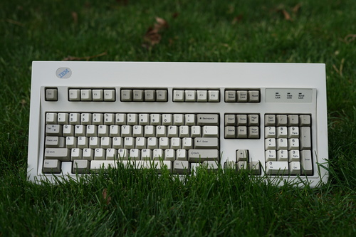
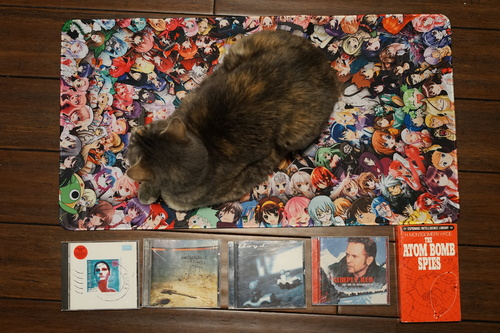
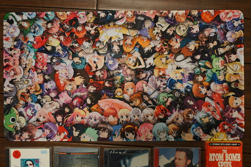
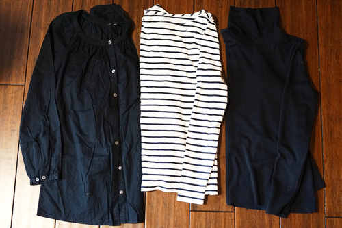
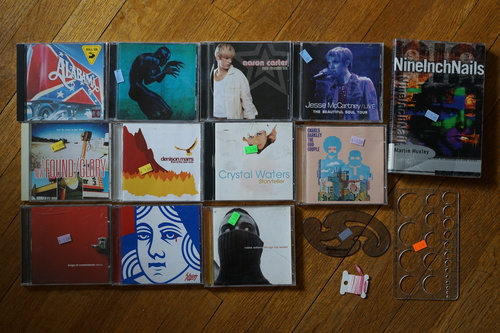
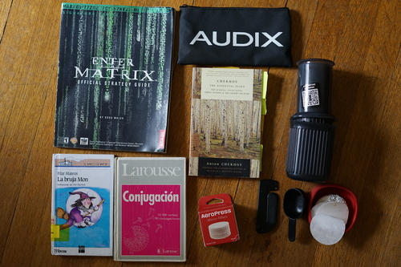

I cleaned my model m. I hope you are proud of me.

gorgest
I just added a review on Herz! Wow! We love purses!!


I wasn't a big fan of the last Switchfoot CD I bought but Linus says this one is good and it's also the right price.
My mom really likes this dude. The CD is scratched so I'm worried it won't work.
Without cat...

This thing is crazy!!! Everyone is here! It's a mix of official art and fan art. There's a few boys in there but it's mostly 2010s anime girls.

I had a shirt like this once and I donated it. I regreted it!

This thrift store was having a sale so this total haul was $3.
A pick for my mom

Ryan's haul. I think it came out to $3 as well.
Someone definitely used this once and then tossed it. I was using both a regular size and a mini for us, but now I can use two minis together! It's nice to not have to worry about mixing up the plungers. I like the mini over the regular size personally.
And a few that didn't make it into any photos.